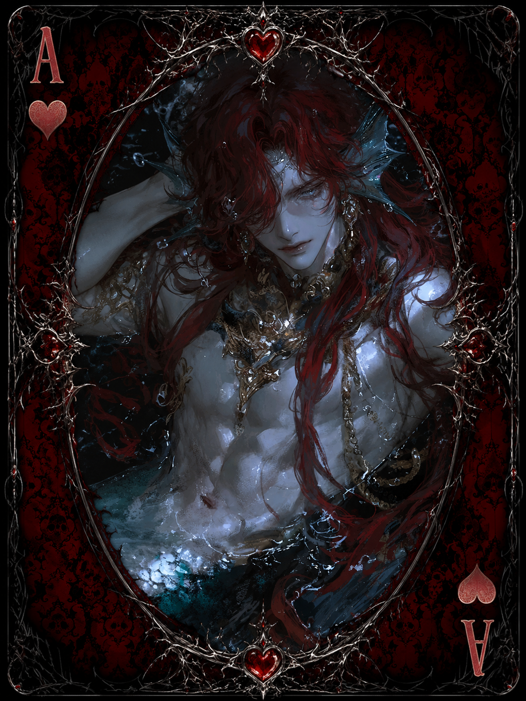

| Race | Triton |
| Gender | Male |
| Age | 126 Years |
| Nation | Windward Isles |
| Weapon | Jeweled Dagger |
| Magic | Charmwater Magic |
Xareth was once the crown prince of Atlantis, destined to inherit a kingdom that no longer exists. After the destruction of his homeland, he abandoned the idea of rebuilding what was lost and instead began wandering the open sea, eventually becoming a familiar presence around the Windward Isles.
Ambitious, spoiled, and easily bored, Xareth dislikes staying in one place for too long. He has a particular obsession with jewelry, luxury, and anything that catches his attention, often spending time in taverns, ports, and markets simply because he finds ordinary life more entertaining than responsibility.
Although he possesses some magical ability, Xareth is not considered particularly dangerous. His Charmwater Magic allows him to subtly influence emotions through enchanted water and his voice, but he usually relies far more on appearance, confidence, and manipulation than direct confrontation. His jeweled dagger is carried more as a symbol of status than as a serious weapon.
Xareth has learned to survive by using his beauty and charisma to his advantage, often charming strangers into buying him drinks, offering him gifts, or simply letting him get away with behavior that would irritate anyone else. Beneath the vanity and arrogance, however, remains the last heir of a destroyed kingdom—though whether he ever intends to reclaim that legacy is another question entirely.